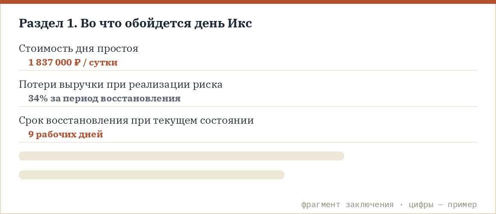
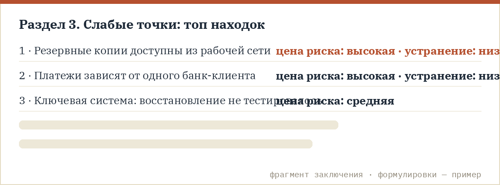
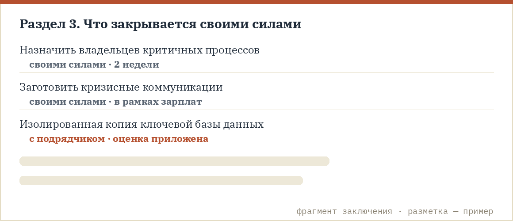
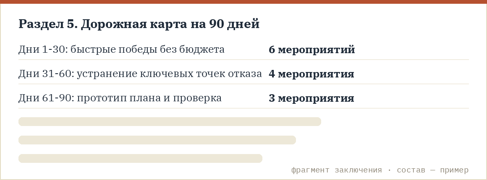

Что это и для кого
Стресс-тест — продукт для руководителей и собственников среднего бизнеса, которым нужен честный вердикт об устойчивости компании и конкретный план, а не абонемент на консалтинг. Мы приходим на два дня, проверяем систему непрерывности «в бою» и отдаем заключение с цифрами. Дальше вы решаете сами: значительную часть найденных слабых мест можно закрыть собственными силами, организационными мерами — и мы прямо показываем, какие именно и как.
Стресс-тест задуман как законченный продукт: его результат — план, с которым ваша команда работает самостоятельно, без обязательных продолжений. Значительная часть рекомендаций сознательно сформулирована как организационные шаги своими силами — так устроена сама конструкция продукта. Если на каких-то шагах позже захочется поддержки, она возможна, но это отдельное решение, которое остается за вами.
Как проходят 2 дня
День 1. Обследование и экономика. Полноценная диагностика системы непрерывности — больше ста вопросов по шести областям: критичные процессы, ИТ и данные, люди, поставщики, планы и финансовая устойчивость (это не бесплатный экспресс-квиз с сайта, а глубокое обследование с интервью ключевых людей). Параллельно считаем экономику: сколько стоит день простоя вашей компании и какую долю выручки вы потеряете при реализации риска — в деньгах, по вашей управленческой отчетности.
День 2. Стресс-симуляция «День Икс»: атака шифровальщика на вашу компанию. Берем самый показательный сценарий современности — утром не открываются файлы, на экранах требование выкупа, встали учетные системы и почта — и разбираем его в живом диалоге с руководителем и ключевой командой: кто первым заметит, кто вправе решать, что говорим сотрудникам и клиентам, как и за сколько восстанавливаемся. Это кабинетное тестирование — спокойный, управляемый разговор по сценарию, без театра и таймеров; никакие боевые системы не затрагиваются, но решения, пробелы полномочий и открытые вопросы в нем абсолютно настоящие.
Сноска: если шифровальщик для вашей отрасли не главный кошмар, подберем сценарий-аналог — авария на площадке, потеря ключевого поставщика, отказ ИТ. Но рекомендуем отрабатывать именно на шифровальщике: этот сценарий останавливает все процессы сразу и честнее всего вскрывает готовность.
Что получает генеральный директор
Конкретный расчет, во что обойдется день Икс: стоимость дня простоя, потери выручки, срок восстановления при текущем состоянии — цифры, а не оценки «высокий/средний/низкий».

Список слабых точек, которые есть уже сейчас, отсортированный по соотношению «цена риска / стоимость устранения».

Разметку «своими силами / с помощью»: какие дыры закрываются организационными мерами в рамках зарплат сотрудников — назначить ответственных, задокументировать, подготовить коммуникации, развести доступы — и как именно это сделать. По нашему опыту так закрывается заметная часть найденного, без дополнительных бюджетов.

План первых 90 дней — короткая дорожная карта, с которой команда работает самостоятельно.

Артефакты на выходе
- Заключение для генерального директора (10-15 страниц, язык руководителя).
- Расчет ущерба в деньгах: стоимость дня простоя и доля выручки под риском.
- Модель влияния риска на бизнес-процессы: что и в какой последовательности останавливается.
- Карта единых точек отказа — ИТ, люди, поставщики, площадки.
- Оценка устойчивости: индекс 0-100 по шести областям (стартовая точка для будущих замеров).
- Наблюдения симуляции: где буксовали решения, какие полномочия не определены, оценка реального времени восстановления.
- Прототип плана непрерывности (BCP) под вашу специфику.
- Чек-лист первых 24 часов и заготовки кризисных коммуникаций — сотрудникам, клиентам, партнерам.
- Дорожная карта укрепления устойчивости на 90 дней с разметкой «своими силами / с подрядчиком».
Вопрос-ответ
Почему именно шифровальщик? Это единственный сценарий, который останавливает все процессы одновременно и проверяет сразу ИТ, людей, полномочия и коммуникации. Отработав его, вы готовы к большинству более простых сбоев.
Сколько людей и времени это займет у нас? Управленческая команда 6-10 человек: день 1 — интервью по 1-1,5 часа, день 2 — симуляция 3-4 часа единым блоком. Производство и операции не останавливаются.
Что будет после? Нас начнут «дожимать» на большой проект? Нет. Заключение и план — самодостаточный результат, разметка «своими силами» — его центральная часть. Если захотите продолжить — например, поставить дашборд непрерывности для регулярного замера индекса или провести обучение команды — это отдельные решения, которые вы примете без давления.
Можно ли провести удаленно? День 1 (диагностика) — да. День 2 (симуляция) сильнее работает очно: решения и динамика команды видны только вживую. Для распределенных компаний собираем гибрид.